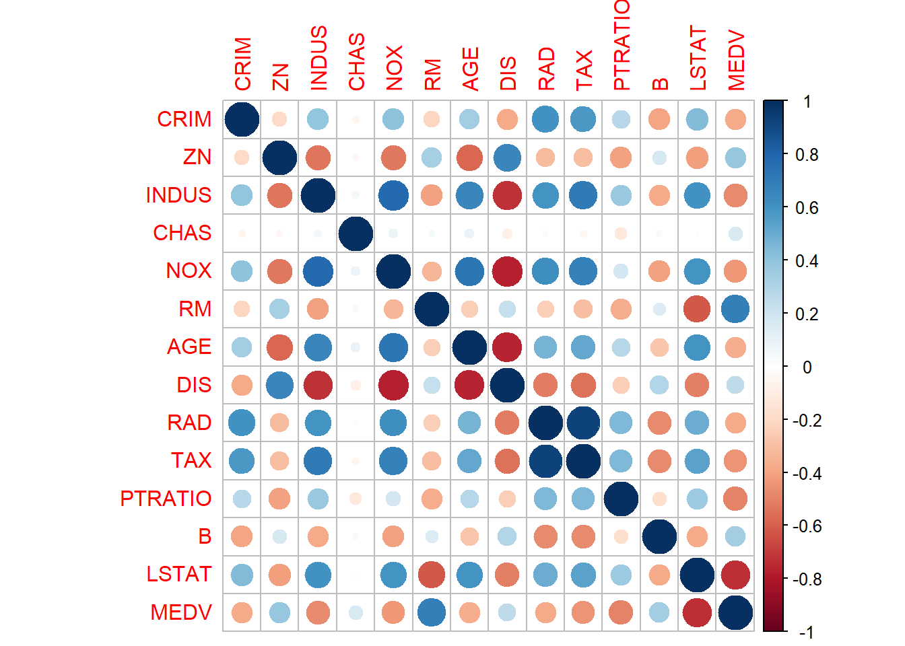
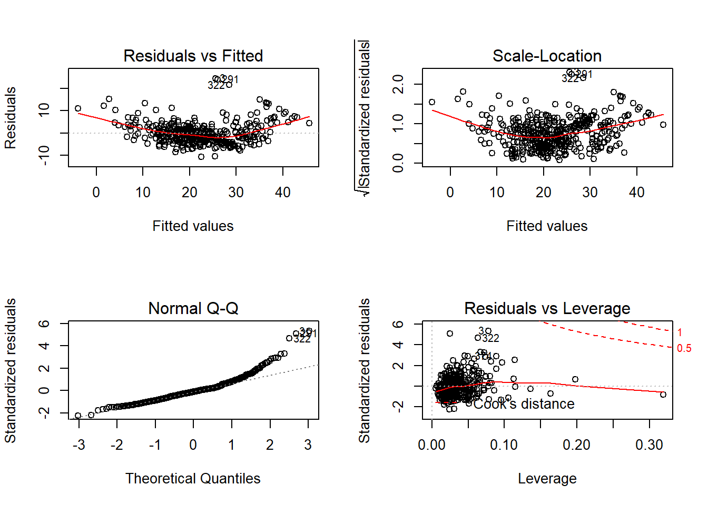
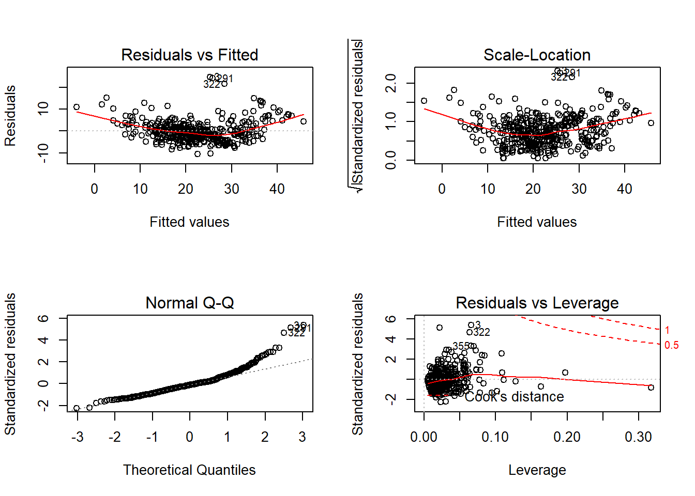

library(keras)
housing <- dataset_boston_housing()naks <- as.data.frame(housing$train$x)
naks$y <- housing$train$y
niks <- c(
'CRIM',
'ZN',
'INDUS',
'CHAS',
'NOX',
'RM',
'AGE',
'DIS',
'RAD',
'TAX',
'PTRATIO',
'B',
'LSTAT',
'MEDV'
)
colnames(naks) <- niks
summary(naks)## CRIM ZN INDUS CHAS
## Min. : 0.00632 Min. : 0.00 Min. : 0.46 Min. :0.00000
## 1st Qu.: 0.08144 1st Qu.: 0.00 1st Qu.: 5.13 1st Qu.:0.00000
## Median : 0.26888 Median : 0.00 Median : 9.69 Median :0.00000
## Mean : 3.74511 Mean : 11.48 Mean :11.10 Mean :0.06188
## 3rd Qu.: 3.67481 3rd Qu.: 12.50 3rd Qu.:18.10 3rd Qu.:0.00000
## Max. :88.97620 Max. :100.00 Max. :27.74 Max. :1.00000
## NOX RM AGE DIS
## Min. :0.3850 Min. :3.561 Min. : 2.90 Min. : 1.130
## 1st Qu.:0.4530 1st Qu.:5.875 1st Qu.: 45.48 1st Qu.: 2.077
## Median :0.5380 Median :6.199 Median : 78.50 Median : 3.142
## Mean :0.5574 Mean :6.267 Mean : 69.01 Mean : 3.740
## 3rd Qu.:0.6310 3rd Qu.:6.609 3rd Qu.: 94.10 3rd Qu.: 5.118
## Max. :0.8710 Max. :8.725 Max. :100.00 Max. :10.710
## RAD TAX PTRATIO B
## Min. : 1.000 Min. :188.0 Min. :12.60 Min. : 0.32
## 1st Qu.: 4.000 1st Qu.:279.0 1st Qu.:17.23 1st Qu.:374.67
## Median : 5.000 Median :330.0 Median :19.10 Median :391.25
## Mean : 9.441 Mean :405.9 Mean :18.48 Mean :354.78
## 3rd Qu.:24.000 3rd Qu.:666.0 3rd Qu.:20.20 3rd Qu.:396.16
## Max. :24.000 Max. :711.0 Max. :22.00 Max. :396.90
## LSTAT MEDV
## Min. : 1.73 Min. : 5.00
## 1st Qu.: 6.89 1st Qu.:16.68
## Median :11.39 Median :20.75
## Mean :12.74 Mean :22.40
## 3rd Qu.:17.09 3rd Qu.:24.80
## Max. :37.97 Max. :50.00library(corrplot)
corrplot(cor(as.matrix(naks)), method="circle")
fit <- lm(MEDV ~ ., data = naks)
summary(fit)##
## Call:
## lm(formula = MEDV ~ ., data = naks)
##
## Residuals:
## Min 1Q Median 3Q Max
## -10.6457 -3.0082 -0.5798 1.7944 24.4582
##
## Coefficients:
## Estimate Std. Error t value Pr(>|t|)
## (Intercept) 40.293671 5.810583 6.935 1.70e-11 ***
## CRIM -0.119998 0.033697 -3.561 0.000415 ***
## ZN 0.057000 0.015092 3.777 0.000184 ***
## INDUS 0.003984 0.068687 0.058 0.953779
## CHAS 4.126982 1.014205 4.069 5.71e-05 ***
## NOX -20.500296 4.341830 -4.722 3.27e-06 ***
## RM 3.380249 0.466618 7.244 2.34e-12 ***
## AGE 0.007568 0.015323 0.494 0.621648
## DIS -1.711898 0.237486 -7.208 2.96e-12 ***
## RAD 0.334748 0.078567 4.261 2.56e-05 ***
## TAX -0.011780 0.004457 -2.643 0.008556 **
## PTRATIO -0.902318 0.145218 -6.214 1.33e-09 ***
## B 0.008719 0.003001 2.906 0.003875 **
## LSTAT -0.555843 0.054637 -10.173 < 2e-16 ***
## ---
## Signif. codes: 0 '***' 0.001 '**' 0.01 '*' 0.05 '.' 0.1 ' ' 1
##
## Residual standard error: 4.774 on 390 degrees of freedom
## Multiple R-squared: 0.74, Adjusted R-squared: 0.7313
## F-statistic: 85.37 on 13 and 390 DF, p-value: < 2.2e-16layout(matrix(c(1,2,3,4),2,2))
plot(fit)
plop <- as.data.frame(housing$test$x)
plop$y <- housing$test$y
colnames(plop) <- nikspred <- predict(fit, plop)
summary(pred)## Min. 1st Qu. Median Mean 3rd Qu. Max.
## 3.838 18.852 22.895 23.133 26.751 41.491actuals_preds <- data.frame(cbind(actuals=plop$MEDV, predicteds=pred))
cor(actuals_preds)## actuals predicteds
## actuals 1.0000000 0.8496675
## predicteds 0.8496675 1.0000000library(MASS)
step <- stepAIC(fit, direction="both")## Start: AIC=1276.87
## MEDV ~ CRIM + ZN + INDUS + CHAS + NOX + RM + AGE + DIS + RAD +
## TAX + PTRATIO + B + LSTAT
##
## Df Sum of Sq RSS AIC
## - INDUS 1 0.08 8890.0 1274.9
## - AGE 1 5.56 8895.5 1275.1
## <none> 8889.9 1276.9
## - TAX 1 159.19 9049.1 1282.0
## - B 1 192.44 9082.4 1283.5
## - CRIM 1 289.06 9179.0 1287.8
## - ZN 1 325.18 9215.1 1289.4
## - CHAS 1 377.44 9267.4 1291.7
## - RAD 1 413.79 9303.7 1293.2
## - NOX 1 508.17 9398.1 1297.3
## - PTRATIO 1 880.06 9770.0 1313.0
## - DIS 1 1184.45 10074.4 1325.4
## - RM 1 1196.22 10086.2 1325.9
## - LSTAT 1 2359.17 11249.1 1370.0
##
## Step: AIC=1274.87
## MEDV ~ CRIM + ZN + CHAS + NOX + RM + AGE + DIS + RAD + TAX +
## PTRATIO + B + LSTAT
##
## Df Sum of Sq RSS AIC
## - AGE 1 5.55 8895.6 1273.1
## <none> 8890.0 1274.9
## + INDUS 1 0.08 8889.9 1276.9
## - TAX 1 181.12 9071.1 1281.0
## - B 1 192.41 9082.4 1281.5
## - CRIM 1 289.76 9179.8 1285.8
## - ZN 1 326.56 9216.6 1287.5
## - CHAS 1 380.90 9270.9 1289.8
## - RAD 1 436.58 9326.6 1292.2
## - NOX 1 544.59 9434.6 1296.9
## - PTRATIO 1 897.36 9787.4 1311.7
## - RM 1 1204.66 10094.7 1324.2
## - DIS 1 1263.14 10153.2 1326.5
## - LSTAT 1 2372.04 11262.1 1368.4
##
## Step: AIC=1273.12
## MEDV ~ CRIM + ZN + CHAS + NOX + RM + DIS + RAD + TAX + PTRATIO +
## B + LSTAT
##
## Df Sum of Sq RSS AIC
## <none> 8895.6 1273.1
## + AGE 1 5.55 8890.0 1274.9
## + INDUS 1 0.07 8895.5 1275.1
## - TAX 1 177.42 9073.0 1279.1
## - B 1 198.09 9093.7 1280.0
## - CRIM 1 288.93 9184.5 1284.0
## - ZN 1 321.02 9216.6 1285.5
## - CHAS 1 386.48 9282.1 1288.3
## - RAD 1 431.03 9326.6 1290.2
## - NOX 1 552.82 9448.4 1295.5
## - PTRATIO 1 893.04 9788.6 1309.8
## - RM 1 1321.19 10216.8 1327.1
## - DIS 1 1489.34 10384.9 1333.7
## - LSTAT 1 2573.89 11469.5 1373.8step$anova # display results## Stepwise Model Path
## Analysis of Deviance Table
##
## Initial Model:
## MEDV ~ CRIM + ZN + INDUS + CHAS + NOX + RM + AGE + DIS + RAD +
## TAX + PTRATIO + B + LSTAT
##
## Final Model:
## MEDV ~ CRIM + ZN + CHAS + NOX + RM + DIS + RAD + TAX + PTRATIO +
## B + LSTAT
##
##
## Step Df Deviance Resid. Df Resid. Dev AIC
## 1 390 8889.940 1276.869
## 2 - INDUS 1 0.07668007 391 8890.016 1274.873
## 3 - AGE 1 5.55095878 392 8895.567 1273.125fit_1 <- lm(MEDV ~ . - INDUS - AGE, data = naks)
summary(fit_1)##
## Call:
## lm(formula = MEDV ~ . - INDUS - AGE, data = naks)
##
## Residuals:
## Min 1Q Median 3Q Max
## -10.6078 -2.9188 -0.6121 1.7447 24.7155
##
## Coefficients:
## Estimate Std. Error t value Pr(>|t|)
## (Intercept) 39.989919 5.761328 6.941 1.62e-11 ***
## CRIM -0.119887 0.033599 -3.568 0.000404 ***
## ZN 0.055921 0.014868 3.761 0.000195 ***
## CHAS 4.156767 1.007241 4.127 4.49e-05 ***
## NOX -19.906627 4.033204 -4.936 1.18e-06 ***
## RM 3.433030 0.449924 7.630 1.80e-13 ***
## DIS -1.753552 0.216454 -8.101 6.97e-15 ***
## RAD 0.329404 0.075582 4.358 1.68e-05 ***
## TAX -0.011533 0.004124 -2.796 0.005426 **
## PTRATIO -0.892897 0.142335 -6.273 9.36e-10 ***
## B 0.008818 0.002985 2.954 0.003321 **
## LSTAT -0.546782 0.051341 -10.650 < 2e-16 ***
## ---
## Signif. codes: 0 '***' 0.001 '**' 0.01 '*' 0.05 '.' 0.1 ' ' 1
##
## Residual standard error: 4.764 on 392 degrees of freedom
## Multiple R-squared: 0.7398, Adjusted R-squared: 0.7325
## F-statistic: 101.3 on 11 and 392 DF, p-value: < 2.2e-16layout(matrix(c(1,2,3,4),2,2))
plot(fit_1)
pred_1 <- predict(fit_1, plop)
summary(pred_1)## Min. 1st Qu. Median Mean 3rd Qu. Max.
## 3.881 18.728 22.868 23.132 26.692 41.349actuals_preds_1 <- data.frame(cbind(actuals=plop$MEDV, predicteds=pred_1))
cor(actuals_preds_1)## actuals predicteds
## actuals 1.0000000 0.8502061
## predicteds 0.8502061 1.0000000anova(fit,fit_1)## Analysis of Variance Table
##
## Model 1: MEDV ~ CRIM + ZN + INDUS + CHAS + NOX + RM + AGE + DIS + RAD +
## TAX + PTRATIO + B + LSTAT
## Model 2: MEDV ~ (CRIM + ZN + INDUS + CHAS + NOX + RM + AGE + DIS + RAD +
## TAX + PTRATIO + B + LSTAT) - INDUS - AGE
## Res.Df RSS Df Sum of Sq F Pr(>F)
## 1 390 8889.9
## 2 392 8895.6 -2 -5.6276 0.1234 0.8839